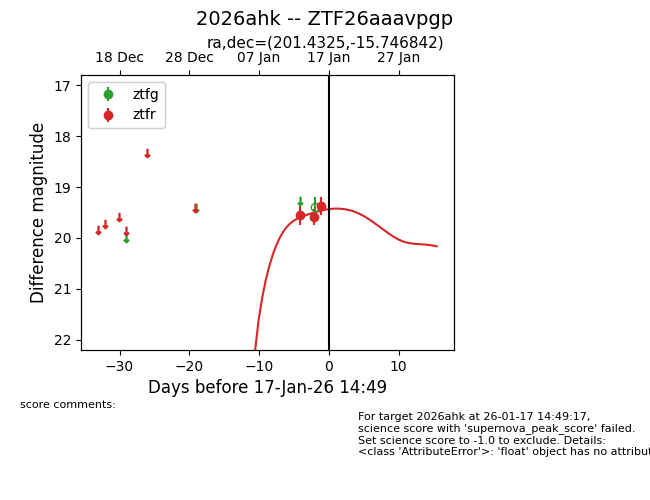
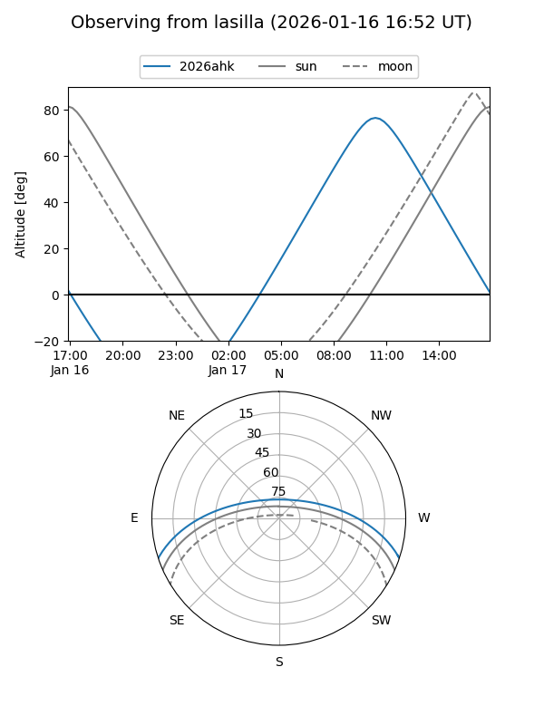
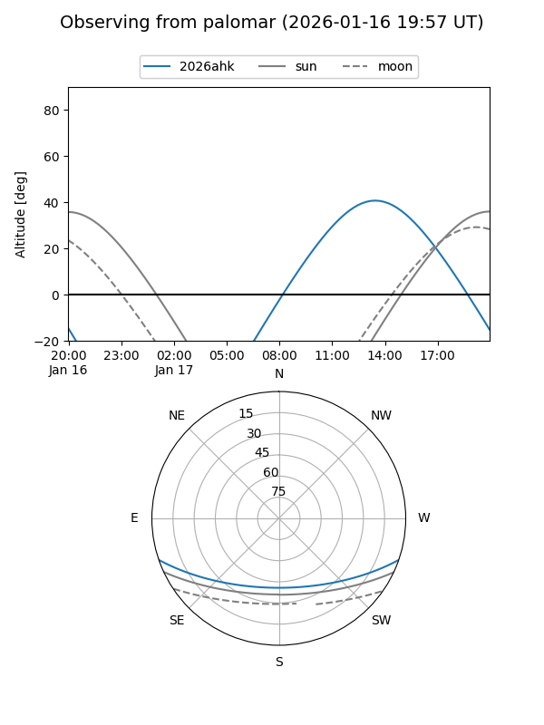
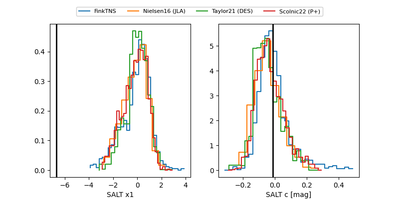

2026ahk
Target 2026ahk at 2026-01-21 14:56
Aliases and brokers:
FINK: link
Lasair: link
ALeRCE: link
TNS: link
YSE: link
alt names
ZTF26aaavpgp (ztf,fink_ztf)
2026ahk (tns,yse)
Coordinates:
equatorial (ra, dec) = 201.4325,-15.74684
equatorial (HMS+DMS) = 13:25:43.79,-15:44:48.63
galactic (l, b) = (314.9233,+46.32494)
Flags:
Photometry:
last ztfg=19.33, ztfr=19.32
3 ztfg, 4 ztfr detections
Lightcurve

Visibility


Additional plots
